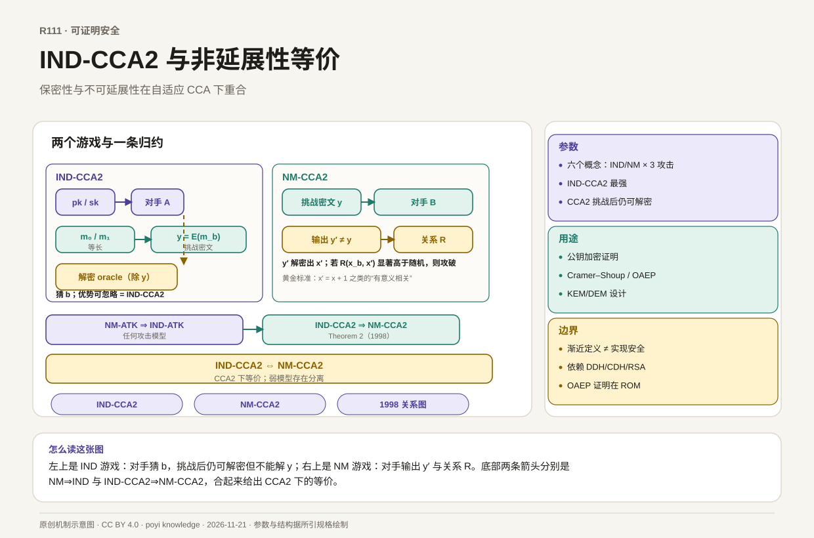
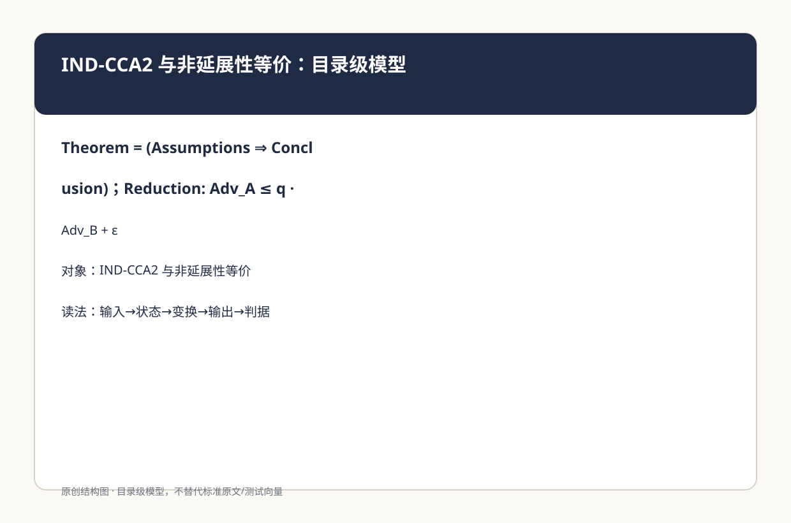

原理与机制
定理：IND-CCA2 与非延展性等价（IND-CCA2 equivalence with non-malleability）。### 两个游戏
IND-CCA2：挑战者生成 pk/sk，给对手 A 解密 oracle；A 选两个等长消息 m0、m1，拿到 y = E(mb)，仍可继续问解密 oracle，但不能问 y；A 猜 b，优势可忽略则安全。NM-CCA2：A 拿到 y 后输出一组不同于 y 的密文 y'，并给一个关系 R；若 y' 解密出的明文与挑战明文“有意义相关”（例如 x' = x + 1）的概率显著高于随机，则攻破。### 六个概念
把目标 {IND, NM} 与攻击 {CPA, CCA1, CCA2} 组合，得到六个定义。NM-ATK ⇒ IND-ATK 对任何攻击模型成立；IND-CCA2 ⇒ NM-CCA2；合起来就是 CCA2 下两者等价。弱模型没有这种等价：IND-CCA1 不蕴含 NM-CPA，NM-CPA 不蕴含 IND-CCA1，NM-CCA1 不蕴含 NM-CCA2。

为什么重要
证明是归约：给 NM-CCA2 对手 B 构造 IND-CCA2 对手 A。B 输出 y' 后，A 用 CCA2 解密 oracle 解出 x'，检查 R(x_b, x')；如果 B 能以不可忽略优势把 x_b 与相关明文联系起来，A 就能以约一半优势猜 b。CCA2 的关键是挑战后仍能解密 y'，CCA1 做不到。### 为什么重要
IND-CCA2 是公钥加密最强的实用保密性定义，同时排除“拿到密文就能造出相关密文”的延展攻击。Cramer–Shoup、RSA-OAEP（在随机预言机与 Fujisaki–Okamoto 转换下）等方案按此定义证明；只要证明 IND-CCA2，就自动得到 NM-CCA2，不必单独证非延展性。
应用与实例
现代公钥加密方案和 KEM/DEM 构造常以 IND-CCA2 为目标；协议设计只要证明 IND-CCA2，就自动得到 NM-CCA2。它也是教材里“保密性 vs 完整性”关系图的核心节点。### 与 AEAD 的区别
这是公钥加密的定义；对称 AEAD 的 CCA 模型、nonce 处理和认证标签是另一套框架。不要把 IND-CCA2 直接当成 AEAD 的安全证明，也不要把“非延展”误解成“不可篡改”。

边界与攻击面
渐近定义忽略具体参数、密钥生成缺陷、侧信道和实现错误；Bleichenbacher 对 PKCS#1 v1.5 的攻击说明“看起来能加密”不等于 CCA2 安全。证明还依赖计算假设，例如 DDH、CDH 或 RSA。NM 有 simulation-based 与 comparison-based 两种定义；Bellare 等的等价是对其 comparison-based 定义，该定义与 Dolev–Dwork–Naor 的 simulation 定义等价。CCA2 下等价，不代表 CPA/CCA1 也有同样关系。### 随机预言机
OAEP 的 CCA2 证明在随机预言机模型；标准模型下的高效方案更少。定义本身不保证存在高效构造，也不保证在量子模型下成立。
历史与背景
非延展性由 Dolev–Dwork–Naor 在 1991 年提出；Bellare、Desai、Pointcheval、Rogaway 在 CRYPTO 1998 系统比较六种概念，证明 IND-CCA2 ⇔ NM-CCA2 并给出分离；2001 年期刊版扩展。这张关系图后来成为公钥加密教材的标准图。
技术参数与复算边界
该条目的形式模型是 (\Pr[\mathrm{Bad}_A(\lambda)]\le \varepsilon(\lambda))。输入：输入：IND-CCA2 与非延展性等价的公开参数、密钥/随机数与消息；变量说明：Bad 为归约中定义的失败事件，ε 为可忽略函数。 预期输出：按 IND-CCA2 与非延展性等价 的规范执行后得到可验证的输出或可比较的优势界。 复算必须给出输入、步骤、输出和单位；示例只演示流程，不替代标准测试向量。
复杂度由密钥长度、分组/状态规模、轮数、随机数质量和敌手模型共同决定；参数越界、版本差异与实现侧信道都可能使公式结论失效。已登记限制：该条目只给出形式模型与可复算步骤，不声称已完成生产实现、侧信道认证或第三方安全评估。
逐步示例与核验
形式模型与复算步骤
[\Pr[\mathrm{Bad}_A(\lambda)]\le \varepsilon(\lambda)]
IND-CCA2 与非延展性等价的公开参数、密钥/随机数与消息；变量说明：Bad 为归约中定义的失败事件，ε 为可忽略函数。1.定义失败事件。2.构造归约把攻击者转成困难问题求解器。3.证明失败概率上界。边界：公式只覆盖已登记的参数与假设；参数取值、标准版本和实现细节仍以来源为准。
参考出处
- Wikipedia search entry for IND-CCA2 与非延展性等价. https://zh.wikipedia.org/w/index.php?search=IND-CCA2%20%E4%B8%8E%E9%9D%9E%E5%BB%B6%E5%B1%95%E6%80%A7%E7%AD%89%E4%BB%B7
- Handbook of Applied Cryptography (Menezes, van Oorschot, Vanstone). https://www.cacr.math.uwaterloo.ca/hac/